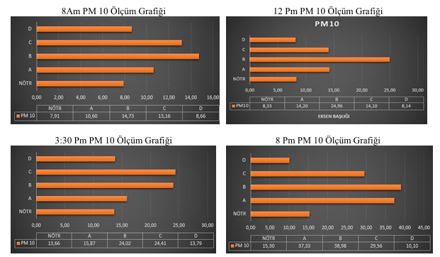
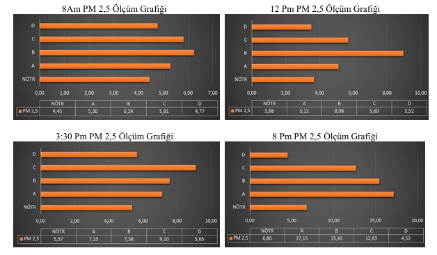
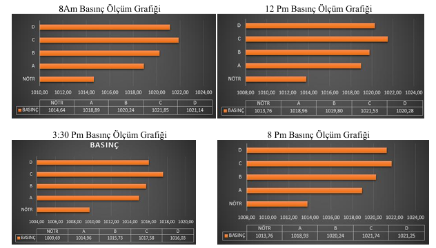
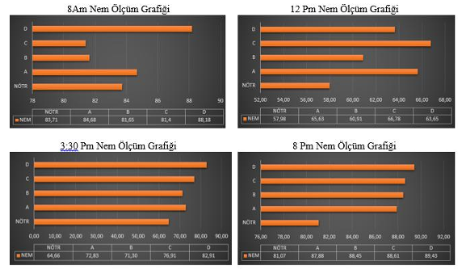
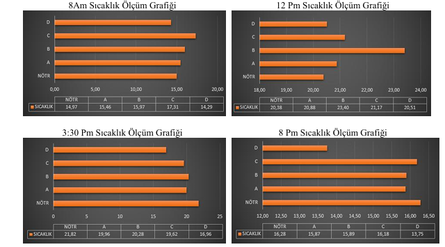
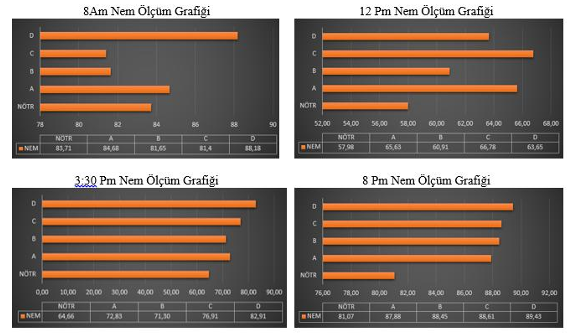
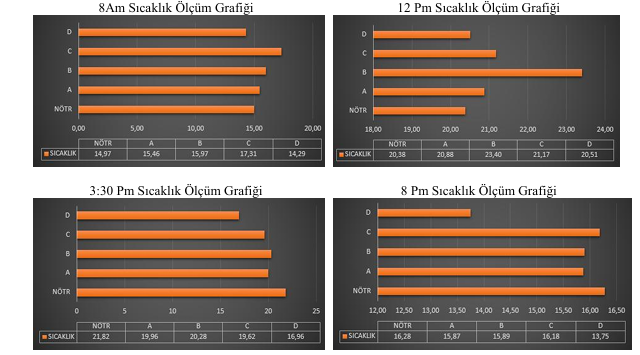

🌡🌫 Gezici Mikro İklim İzleme
Sinop İçin Gezici Mikro İklim İstasyonu ile Kentsel Isı Adası ve Hava Kalitesi Analizi
Beş farklı bölge, dört zaman dilimi ve çoklu sensörlerle; sıcaklık, nem, ışık, basınç, PM₂.₅ ve PM₁₀ değerlerini karşılaştıran kapsamlı mikroiklim çalışması.
Proje Yöntemi
ESP32 tabanlı gezici istasyon 20 gün boyunca 5 bölgede ölçüm yapmış, veriler Excel’de temizlenip ortalamalar üzerinden analiz edilmiştir.
Özet Bulgular
   



Sonuç & Öneriler
Şehir merkezi en sıcak ve en kirli bölgeyi oluştururken ormanlık alan en serin ve en temiz mikroiklimdir. Bitki örtüsünün kirletici filtreleme etkisi ve yapılaşmanın ısı adası oluşturması literatürle uyumludur.